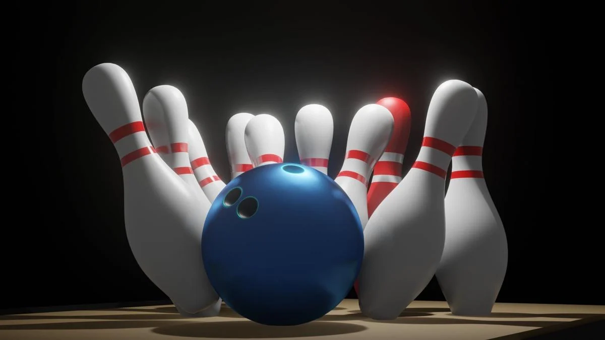
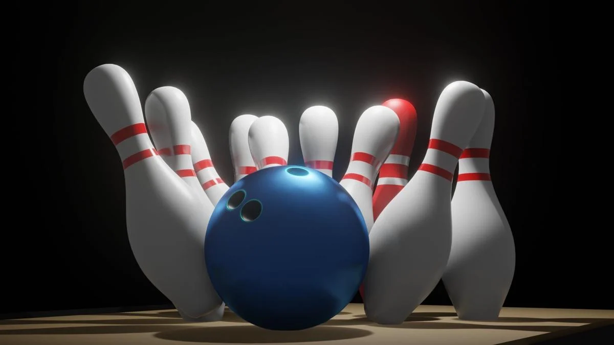

BOWLING!

Bowling is a target sport and recreational activity where players roll a ball toward pins (pin bowling) or other targets (target bowling). It is played by 120 million people in over 90 countries, with 70 million participants in the United States alone.
Pin Bowling
The goal in pin bowling is to knock over pins on a long, lubricated lane surface made of wood or synthetic material. Key achievements include:
- Strike:
All pins knocked down on the first roll.
- Spare:
All pins knocked down on the second roll.
The historical game of skittles is a precursor to modern pin bowling.
Target Bowling
In target bowling, the objective is to roll the ball as close to a target mark as possible. Surfaces include grass, gravel, or synthetic materials. Popular types include:
Target bowling can be played indoors or outdoors, and curling is a related sport.

History
Ancient history
Archeologist's drawing of items found in 1895 in an ancient tomb in Naqada, Egypt, thought to resemble the more modern game of skittles. The archeologist conjectured as to the particular arrangement of the items found.[4] The earliest known forms of bowling date back to ancient Egypt,[5] with wall drawings depicting bowling being found in a royal Egyptian tomb dated to 3200 BC and miniature pins and balls in an Egyptian child's grave about 3200 BC. Remnants of bowling balls were found among artifacts in ancient Egypt going back to the Egyptian protodynastic period in 3200 BC.[6] What is thought to be a child's game involving porphyry (stone) balls, a miniature trilithon, and nine breccia-veined alabaster vase-shaped figures—thought to resemble the more modern game of skittles—was found in Naqada, Egypt, in 1895.[4]
Early balls were made of wood, like lignum vitae, and later transitioned to rubber in the early 20th century. The introduction of polyester and urethane balls in the 1970s revolutionized the game, offering better control and durability.


Creation
Bowling Rules and Regulations
General Rules
-
A game consists of 10 frames. Each player has two chances per frame to knock down as many pins as possible, except in the 10th frame, where additional rolls are allowed if a strike or spare is scored.
-
The objective is to achieve the highest score by knocking down all 10 pins per frame.
-
A perfect game (300 points) is achieved by rolling strikes in all frames, including the extra rolls in the 10th frame.
Scoring
- Strike:
All pins knocked down on the first roll. The score for a strike is 10 points plus the total pins knocked down in the next two rolls.
- Spare:
All pins knocked down in two rolls. The score for a spare is 10 points plus the pins knocked down in the next roll.
- Open Frame:
Pins remain standing after two rolls. The score is the total number of pins knocked down in that frame.
Lane Rules
-
Players must remain behind the foul line when delivering the ball. Crossing the foul line results in a score of zero for that roll.
-
The ball must stay within the lane boundaries. A ball that enters the gutter scores zero for that roll.
Player Conduct
-
Players should take turns and avoid distracting others while they are bowling.
-
Respect lane courtesy by allowing the player on an adjacent lane to bowl first if they are ready.
Common Variations
While the rules above apply to ten-pin bowling, other variations like candlepin, duckpin, and five-pin bowling have unique rules, including different scoring systems and ball sizes.
Equipment
Bowling balls vary, depending on the type of bowling. Ten-pin balls are about 8.59 inches (21.8 cm) in diameter, typically have three holes, and weigh from 6 to 16 lb (2.7 to 7.3 kg). The size and spacing of the finger holes on non-customized balls are generally smaller on lighter balls to accommodate smaller hands. Modern resin covers (surfaces) available since the early 1990s enhance a ball's hook (curve) potential, and the shape of the balls' cores (pictured) permit fine-tuning of desired ball paths. In contrast, traditional plastic balls are suitable for straighter shots. Duckpin and candlepin balls fit in the palm of the hand, and have no holes.
 
